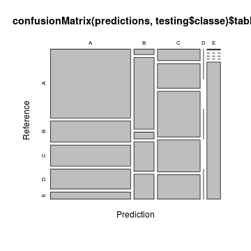
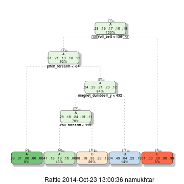

library(knitr)
opts_chunk$set(fig.width=5, fig.height=5)
This is the course project for Coursera Practical Machine Learning.
Initialize random number and load training data:
## Loading required package: lattice
## Loading required package: ggplot2
## set seed
set.seed(32343)
wle_data <- read.csv("data/pml-training.csv")
Remove near zero vars and NAs.
predictors <- colnames(wle_data)
predictors <- predictors[colSums(is.na(wle_data)) == 0]
predictors <- predictors[-(1:7)]
nsv <- nearZeroVar(wle_data[, predictors])
predictors <- predictors[-nsv]
predictors
## [1] "roll_belt" "pitch_belt" "yaw_belt"
## [4] "total_accel_belt" "gyros_belt_x" "gyros_belt_y"
## [7] "gyros_belt_z" "accel_belt_x" "accel_belt_y"
## [10] "accel_belt_z" "magnet_belt_x" "magnet_belt_y"
## [13] "magnet_belt_z" "roll_arm" "pitch_arm"
## [16] "yaw_arm" "total_accel_arm" "gyros_arm_x"
## [19] "gyros_arm_y" "gyros_arm_z" "accel_arm_x"
## [22] "accel_arm_y" "accel_arm_z" "magnet_arm_x"
## [25] "magnet_arm_y" "magnet_arm_z" "roll_dumbbell"
## [28] "pitch_dumbbell" "yaw_dumbbell" "total_accel_dumbbell"
## [31] "gyros_dumbbell_x" "gyros_dumbbell_y" "gyros_dumbbell_z"
## [34] "accel_dumbbell_x" "accel_dumbbell_y" "accel_dumbbell_z"
## [37] "magnet_dumbbell_x" "magnet_dumbbell_y" "magnet_dumbbell_z"
## [40] "roll_forearm" "pitch_forearm" "yaw_forearm"
## [43] "total_accel_forearm" "gyros_forearm_x" "gyros_forearm_y"
## [46] "gyros_forearm_z" "accel_forearm_x" "accel_forearm_y"
## [49] "accel_forearm_z" "magnet_forearm_x" "magnet_forearm_y"
## [52] "magnet_forearm_z" "classe"
Split into training and testing data sets.
inTrain <- createDataPartition(y=wle_data$classe,
p=0.75, list=FALSE)
training <- wle_data[inTrain, predictors]
testing <- wle_data[-inTrain, predictors]
Decision Tree.
modeltree <- train(classe ~., data=training, method="rpart")
## Loading required package: rpart
## CART
##
## 14718 samples
## 52 predictors
## 5 classes: 'A', 'B', 'C', 'D', 'E'
##
## No pre-processing
## Resampling: Bootstrapped (25 reps)
##
## Summary of sample sizes: 14718, 14718, 14718, 14718, 14718, 14718, ...
##
## Resampling results across tuning parameters:
##
## cp Accuracy Kappa Accuracy SD Kappa SD
## 0.03 0.5 0.4 0.04 0.06
## 0.06 0.4 0.2 0.07 0.1
## 0.1 0.3 0.06 0.04 0.06
##
## Accuracy was used to select the optimal model using the largest value.
## The final value used for the model was cp = 0.03.
## n= 14718
##
## node), split, n, loss, yval, (yprob)
## * denotes terminal node
##
## 1) root 14718 10530 A (0.28 0.19 0.17 0.16 0.18)
## 2) roll_belt< 130.5 13497 9323 A (0.31 0.21 0.19 0.18 0.11)
## 4) pitch_forearm< -33.95 1198 8 A (0.99 0.0067 0 0 0) *
## 5) pitch_forearm>=-33.95 12299 9315 A (0.24 0.23 0.21 0.2 0.12)
## 10) magnet_dumbbell_y< 432.5 10287 7385 A (0.28 0.18 0.24 0.19 0.11)
## 20) roll_forearm< 122.5 6397 3787 A (0.41 0.18 0.19 0.16 0.06) *
## 21) roll_forearm>=122.5 3890 2606 C (0.075 0.18 0.33 0.23 0.19) *
## 11) magnet_dumbbell_y>=432.5 2012 1019 B (0.041 0.49 0.042 0.23 0.19) *
## 3) roll_belt>=130.5 1221 11 E (0.009 0 0 0 0.99) *
predictions <- predict(modeltree, newdata=testing)
plot(confusionMatrix(predictions, testing$classe)$table)

library(rattle)
fancyRpartPlot(modeltree$finalModel)

Linear discriminant analysis.
modellda <- train(classe ~., data=training, method="lda")
## Loading required package: MASS
## Linear Discriminant Analysis
##
## 14718 samples
## 52 predictors
## 5 classes: 'A', 'B', 'C', 'D', 'E'
##
## No pre-processing
## Resampling: Bootstrapped (25 reps)
##
## Summary of sample sizes: 14718, 14718, 14718, 14718, 14718, 14718, ...
##
## Resampling results
##
## Accuracy Kappa Accuracy SD Kappa SD
## 0.7 0.6 0.006 0.007
##
##
## Call:
## lda(x, y)
##
## Prior probabilities of groups:
## A B C D E
## 0.2843 0.1935 0.1744 0.1639 0.1839
##
## Group means:
## roll_belt pitch_belt yaw_belt total_accel_belt gyros_belt_x gyros_belt_y
## A 58.84 0.3322 -12.527 10.61 -0.003360 0.04082
## B 64.93 -0.2036 -13.101 11.10 -0.002254 0.04284
## C 65.06 -1.1664 -6.870 11.20 -0.014340 0.04008
## D 61.84 1.9775 -17.276 11.31 -0.014299 0.03700
## E 73.97 0.6694 -6.045 12.63 0.006075 0.03766
## gyros_belt_z accel_belt_x accel_belt_y accel_belt_z magnet_belt_x
## A -0.1199 -6.220 28.67 -61.75 57.95
## B -0.1329 -4.649 31.78 -73.14 49.48
## C -0.1347 -3.869 31.20 -71.56 57.36
## D -0.1382 -8.362 30.92 -70.76 48.50
## E -0.1367 -4.625 29.03 -90.91 62.41
## magnet_belt_y magnet_belt_z roll_arm pitch_arm yaw_arm total_accel_arm
## A 602.5 -337.4 -0.1156 3.355 -11.029 27.38
## B 599.6 -336.2 31.6657 -6.378 7.380 26.55
## C 599.8 -337.5 24.7650 -1.298 4.099 24.30
## D 594.7 -340.1 21.3826 -10.668 4.944 23.20
## E 568.8 -378.2 19.8906 -12.557 -1.659 24.40
## gyros_arm_x gyros_arm_y gyros_arm_z accel_arm_x accel_arm_y accel_arm_z
## A -0.001059 -0.2121 0.2621 -132.25 47.61 -75.88
## B -0.001145 -0.2805 0.2662 -43.34 25.26 -96.21
## C 0.111297 -0.2657 0.2805 -78.44 39.70 -55.31
## D -0.014146 -0.2414 0.2690 16.30 23.08 -46.46
## E 0.043130 -0.2758 0.2769 -17.42 16.60 -75.70
## magnet_arm_x magnet_arm_y magnet_arm_z roll_dumbbell pitch_dumbbell
## A -17.07 234.60 409.5 22.23 -19.237
## B 236.51 129.02 194.3 35.91 2.958
## C 153.98 188.95 359.9 -14.79 -25.204
## D 400.99 96.42 298.8 50.30 -2.242
## E 325.70 83.69 219.2 26.89 -7.008
## yaw_dumbbell total_accel_dumbbell gyros_dumbbell_x gyros_dumbbell_y
## A 0.9043 14.76 0.1626 0.02851
## B 13.5356 14.44 0.1666 0.01738
## C -16.1202 12.87 0.1876 0.05866
## D 0.8408 11.33 0.2043 0.01151
## E 5.1143 14.53 0.1376 0.11547
## gyros_dumbbell_z accel_dumbbell_x accel_dumbbell_y accel_dumbbell_z
## A -0.1481 -51.326 53.57 -57.93
## B -0.1440 -1.191 69.65 -17.08
## C -0.1494 -40.302 29.67 -52.39
## D -0.1339 -22.564 53.30 -34.28
## E -0.1433 -18.686 56.24 -24.93
## magnet_dumbbell_x magnet_dumbbell_y magnet_dumbbell_z roll_forearm
## A -391.5 222.4 10.34 24.78
## B -254.2 269.5 48.32 31.82
## C -373.3 159.1 62.56 58.74
## D -317.2 220.4 53.99 15.75
## E -289.2 238.7 70.66 39.79
## pitch_forearm yaw_forearm total_accel_forearm gyros_forearm_x
## A -7.083 24.822 32.04 0.1736
## B 14.483 13.848 35.41 0.1387
## C 12.709 37.334 34.80 0.2010
## D 28.309 3.616 36.04 0.1288
## E 16.845 11.168 36.68 0.1358
## gyros_forearm_y gyros_forearm_z accel_forearm_x accel_forearm_y
## A 0.07087 0.1138 0.5161 169.1
## B 0.11406 0.1797 -77.8058 134.4
## C 0.07794 0.1401 -49.3693 210.9
## D 0.01957 0.1160 -156.8213 151.4
## E 0.05901 0.1502 -71.8692 146.2
## accel_forearm_z magnet_forearm_x magnet_forearm_y magnet_forearm_z
## A -59.49 -192.5 469.7 412.3
## B -47.74 -323.4 273.0 373.7
## C -61.02 -338.5 502.2 461.7
## D -49.14 -460.1 319.7 367.3
## E -61.09 -333.4 279.5 357.9
##
## Coefficients of linear discriminants:
## LD1 LD2 LD3 LD4
## roll_belt 0.0580551 9.377e-02 -0.0043151 0.0693435
## pitch_belt 0.0342133 1.271e-03 -0.0714675 0.0079676
## yaw_belt -0.0098945 4.551e-05 -0.0125811 -0.0030403
## total_accel_belt -0.0323715 -3.648e-02 -0.2822193 -0.1484989
## gyros_belt_x 0.6152111 2.430e-01 1.0113697 0.3121634
## gyros_belt_y -1.5493598 -2.293e+00 -0.2735195 1.2085908
## gyros_belt_z 0.5373501 5.327e-01 0.3990712 -0.6838270
## accel_belt_x 0.0002344 1.144e-03 0.0249147 0.0033665
## accel_belt_y -0.0213634 -3.054e-02 0.0636893 0.0059314
## accel_belt_z 0.0045167 2.813e-02 -0.0154279 0.0174575
## magnet_belt_x -0.0118611 1.243e-03 -0.0241147 -0.0022534
## magnet_belt_y -0.0219365 -8.407e-03 0.0023320 -0.0035418
## magnet_belt_z 0.0079684 -1.121e-04 0.0123273 0.0024455
## roll_arm 0.0009839 3.173e-04 0.0026812 0.0001666
## pitch_arm -0.0032152 6.655e-03 0.0052351 0.0022334
## yaw_arm 0.0011845 -8.563e-04 0.0017899 -0.0013986
## total_accel_arm 0.0037043 -2.354e-02 -0.0208289 -0.0198715
## gyros_arm_x 0.1453309 2.986e-02 -0.0804109 0.0820018
## gyros_arm_y 0.1235330 -6.310e-02 -0.1425070 0.2745141
## gyros_arm_z -0.1250604 -1.363e-01 0.0121293 0.1561651
## accel_arm_x -0.0034784 -5.838e-03 -0.0078055 -0.0019442
## accel_arm_y -0.0030477 1.379e-02 -0.0005634 0.0043083
## accel_arm_z 0.0097551 -7.915e-04 0.0016725 -0.0075611
## magnet_arm_x 0.0001970 -1.581e-04 0.0021137 0.0011133
## magnet_arm_y -0.0012846 -4.756e-03 0.0053024 0.0002811
## magnet_arm_z -0.0037507 -2.991e-03 -0.0053348 0.0020827
## roll_dumbbell 0.0022653 -3.999e-03 -0.0033123 -0.0079105
## pitch_dumbbell -0.0060706 -3.766e-03 -0.0043890 -0.0045741
## yaw_dumbbell -0.0080117 6.581e-03 -0.0041892 -0.0030639
## total_accel_dumbbell 0.0713307 6.426e-02 0.0001378 0.0030708
## gyros_dumbbell_x 0.3272673 -4.837e-01 0.2989693 0.0114418
## gyros_dumbbell_y 0.2167247 -2.923e-01 0.1172867 0.2133760
## gyros_dumbbell_z 0.2093745 -3.427e-01 -0.0417006 0.0611427
## accel_dumbbell_x 0.0130714 8.504e-03 0.0019433 0.0060898
## accel_dumbbell_y 0.0022895 2.698e-03 0.0045464 -0.0023655
## accel_dumbbell_z 0.0026054 2.188e-03 0.0028043 0.0014743
## magnet_dumbbell_x -0.0042466 3.702e-04 0.0022980 -0.0023370
## magnet_dumbbell_y -0.0011061 2.263e-03 -0.0014178 -0.0019694
## magnet_dumbbell_z 0.0136714 -1.040e-02 0.0007107 0.0090433
## roll_forearm 0.0016350 1.282e-03 0.0002686 0.0012756
## pitch_forearm 0.0159378 -1.232e-02 0.0053711 0.0001553
## yaw_forearm -0.0001830 9.602e-04 0.0004685 0.0010342
## total_accel_forearm 0.0313673 6.050e-03 -0.0076086 0.0035861
## gyros_forearm_x -0.0104532 -7.929e-02 0.1935791 0.1260227
## gyros_forearm_y -0.0146098 -3.424e-02 0.0246718 0.0068667
## gyros_forearm_z 0.1211838 1.023e-01 -0.0858599 -0.0359020
## accel_forearm_x 0.0035764 1.048e-02 -0.0007510 0.0040014
## accel_forearm_y 0.0007351 -1.054e-03 -0.0008915 -0.0022071
## accel_forearm_z -0.0074863 3.223e-03 0.0033903 -0.0045872
## magnet_forearm_x -0.0018588 -3.400e-03 0.0002223 -0.0012279
## magnet_forearm_y -0.0009165 -1.448e-03 0.0005933 0.0003476
## magnet_forearm_z -0.0001733 -1.434e-03 -0.0001449 0.0011691
##
## Proportion of trace:
## LD1 LD2 LD3 LD4
## 0.4908 0.2398 0.1535 0.1159
predictions <- predict(modellda, newdata=testing)
plot(confusionMatrix(predictions, testing$classe)$table)

Principal Component Analysis.
Velloso, E.; Bulling, A.; Gellersen, H.; Ugulino, W.; Fuks, H. Qualitative Activity Recognition of Weight Lifting Exercises. Proceedings of 4th International Conference in Cooperation with SIGCHI (Augmented Human '13) . Stuttgart, Germany: ACM SIGCHI, 2013.
Read more: http://groupware.les.inf.puc-rio.br/har#weight_lifting_exercises#ixzz3Gx4pWyLd